Functions
A function is a special type of relationship between two quantities. It takes an input value, performs an operation on it, and produces exactly one output value. You can think of a function as a machine: you put a number in, the machine works on it, and a single number comes out.
Before You Begin: Make sure you have reviewed our Rates of Change page, especially the section on direct proportion and linear graphs. Understanding how to work with linear equations will help you understand functions more easily.
Types of Relations
A relation is any set of ordered pairs that shows a connection between two sets of quantities. When we show how elements from one set (Domain) are connected to elements in another set (Codomain), we call this a mapping.
There are four types of relations:
1. One-to-One Relation
Each input has exactly one output, and each output comes from exactly one input.
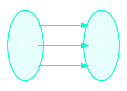
Example: f(x) = x + 2
2. Many-to-One Relation
Multiple inputs can point to the same output.
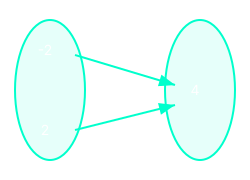
Example: f(x) = x²
3. One-to-Many Relation
One input points to multiple outputs. (Not a Function)
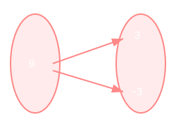
Example: x = y²
4. Many-to-Many Relation
Multiple inputs share multiple outputs. (Not a Function)
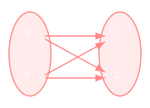
Example: Circle equations
What is a Function?
A function is a special type of relation where each input has exactly one output. This means that for every input value, there is only one possible output value.
Which relations are functions?
- One-to-One relations ARE functions
- Many-to-One relations ARE functions
- One-to-Many relations are NOT functions
- Many-to-Many relations are NOT functions
The Vertical Line Test
When a relation is drawn as a graph, you can test if it is a function using the vertical line test. If a vertical line touches the graph at more than one point, then the relation is not a function.
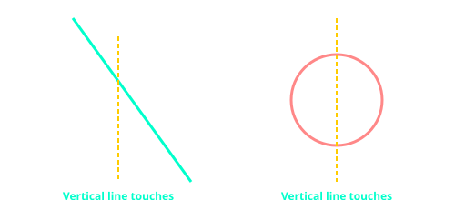
Function Notation
Function notation is a way of writing functions that makes it clear what the input and output are. Instead of writing y = 2x + 3, we write:
f(x) = 2x + 3
Where:
- f is the name of the function
- x is the input variable
- f(x) is the output (read as "f of x")
Common function notation examples:
- f(x) = 3x - 5
- g(x) = x² + 2
- h(x) = 4x
Writing Linear Equations in Function Notation:
• y = 4x + 7 → f(x) = 4x + 7
• y = -2x + 5 → f(x) = -2x + 5
• y = x - 3 → f(x) = x - 3
Linear Functions
A linear function is a function whose graph is a straight line. The general form of a linear function is:
f(x) = mx + c
Where:
- m is the gradient (slope) of the line
- c is the y-intercept (where the line crosses the y-axis)
Evaluating Functions
When evaluating functions, we basically find the output for a given input. This is done by substituting the input value into the function to find subsequent results, or more formally, the range of our function.
Evaluating a Linear Function
Given f(x) = 3x - 5, find:
(a) f(2),
(b) f(0),
(c) f(-4)
(a): Find f(2) by substituting x = 2 into the function.
f(2) = 3 × 2 - 5
= 6 - 5
= 1
(b) Find f(0) by substituting x = 0 into the function.
f(0) = 3 × 0 - 5
= 0 - 5
= -5
(c) Find f(-4) by substituting x = -4 into the function.
f(-4) = 3 × (-4) - 5
= -12 - 5
= -17
Finding the Input Given the Output
Given f(x) = 2x + 7, find the value of x when f(x) = 13.
Step 1: Set up the equation.
2x + 7 = 13
Step 2: Solve for x.
2x + 7 - 7 = 13 - 7
2x ÷ 2 = 6 ÷ 2
x = 3
Answer: x = 3
Graphs of Linear Functions
To draw the graph of a linear function, you need at least two points. You can find these points by choosing x-values and calculating the corresponding f(x) values.
Drawing a Linear Function Graph
Draw the graph of f(x) = 2x - 1 for x values from -2 to 3.
Step 1: Create a table of values.
| x | f(x) = 2x - 1 | Point |
|---|---|---|
| -2 | -5 | (-2, -5) |
| -1 | -3 | (-1, -3) |
| 0 | -1 | (0, -1) |
| 1 | 1 | (1, 1) |
| 2 | 3 | (2, 3) |
| 3 | 5 | (3, 5) |
Step 2: Plot the points and join them with a straight line.
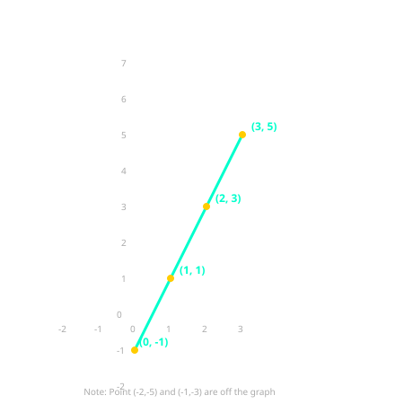
Finding the Function from a Graph
To find the linear function from a graph, you need to determine the gradient (m) and the y-intercept (c).
Finding the Function from a Graph
The graph below shows a straight line passing through the points (0, 2) and (4, 10). Find the equation of the line.
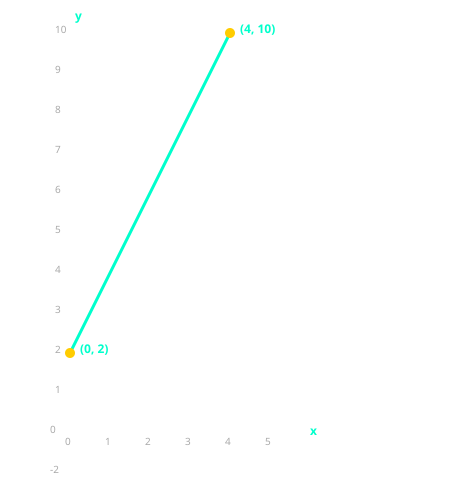
Step 1: Identify the y-intercept (c).
Look at where the line crosses the y-axis. The y-axis is the vertical line where x = 0.
From the graph, the line crosses the y-axis at (0, 2).
Therefore, c = 2.
Step 2: Identify two points on the line and calculate the gradient (m).
From the graph, we can clearly see the points (0, 2) and (4, 10).
Use the gradient formula:
Step 3: Write the function in the form f(x) = mx + c.
Substitute m = 2 and c = 2 into f(x) = mx + c
f(x) = 2x + 2
Domain and Range
Every function has two important sets that help us understand what values the function can work with:
- Domain: The set of all possible input values (x-values) that the function can accept. Think of this as "what numbers can I put into the function?"
- Range: The set of all possible output values (f(x)-values) that the function produces. Think of this as "what numbers can come out of the function?"
Domain and Range of f(x) = 2x + 1 (No Restrictions)
For the function f(x) = 2x + 1, there are no restrictions on what x can be. We can use any real number.
Step 1: Find the domain.
Since we can multiply any real number by 2 and add 1, the domain is all real numbers.
Domain = {all real numbers} or in interval notation: (-∞, ∞)
Step 2: Find the range.
Since x can be any real number, 2x + 1 can also be any real number.
Range = {all real numbers} or in interval notation: (-∞, ∞)
Domain and Range with a Restricted Domain
For the function f(x) = 2x + 1, suppose x is only allowed to be between -3 and 3 (inclusive).
Step 1: Identify the domain.
The problem tells us that x is between -3 and 3, including -3 and 3.
Domain = {x | -3 ≤ x ≤ 3}
Step 2: Find the range by substituting the smallest and largest x-values.
When x = -3 (smallest): f(-3) = 2(-3) + 1 = -6 + 1 = -5
When x = 3 (largest): f(3) = 2(3) + 1 = 6 + 1 = 7
Step 3: Determine the range.
Since the function is linear and continuous, all y-values between -5 and 7 will be produced.
Range = {y | -5 ≤ y ≤ 7}
Domain and Range of f(x) = x²
For the function f(x) = x² (a quadratic function).
Step 1: Find the domain.
We can square any real number. There is no restriction on x.
Domain = {all real numbers} or (-∞, ∞)
Step 2: Find the range.
When we square a number, the result is always greater than or equal to 0. Even negative numbers become positive when squared.
The smallest possible output is 0 (when x = 0). There is no largest output because very large numbers give very large squares.
Range = {y | y ≥ 0} or [0, ∞)
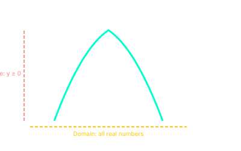
Answer: Domain = all real numbers, Range = y ≥ 0
Finding Domain and Range from a Graph
The graph below shows the function f(x) = 2x + 1. Study the graph carefully to determine its domain and range.
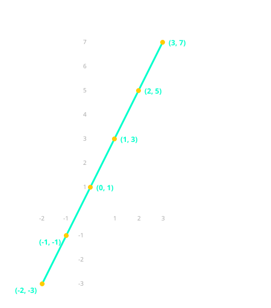
Step 1: Find the domain.
Look at the x-values covered by the graph. The graph shows points and a line from x = -2 to x = 3.
There are no points or line beyond x = -2 or x = 3.
Therefore, the domain is -2 ≤ x ≤ 3.
Step 2: Find the range.
Look at the y-values covered by the graph. The smallest y-value shown is when x = -2, giving y = -3.
The largest y-value shown is when x = 3, giving y = 7.
Therefore, the range is -3 ≤ y ≤ 7.
Notation Reminder:
• {x | -3 ≤ x ≤ 3} means "the set of x such that x is between -3 and 3, inclusive"
• (-∞, ∞) means all real numbers
• [0, ∞) means all numbers greater than or equal to 0
• (0, 5) means all numbers between 0 and 5, excluding 0 and 5
Inverse Functions
An inverse function reverses the operation of the original function. If a function f takes an input x and produces an output y, then the inverse function f-1 takes y and returns the original input x.
If f(x) = y, then f-1(y) = x
Finding the Inverse Function Algebraically
Step 1: Replace f(x) with y.
Step 2: Swap x and y.
Step 3: Solve for y.
Step 4: Replace y with f-1(x).
Example: Finding the Inverse of f(x) = 2x + 3
Step 1: Replace f(x) with y.
y = 2x + 3
Step 2: Swap x and y.
x = 2y + 3
Step 3: Solve for y.
x - 3 = 2y
Step 4: Replace y with f⁻¹(x).
Check: f(2) = 2(2) + 3 = 7, and
The inverse returns the original input!
Example: Finding the Inverse of f(x) = 3x - 4
Step 1: Replace f(x) with y.
y = 3x - 4
Step 2: Swap x and y.
x = 3y - 4
Step 3: Solve for y.
x + 4 = 3y
Step 4: Replace y with f⁻¹(x).
Composite Functions
A composite function is formed when one function is applied to the result of another function. The composite function f∘g (read as "f of g of x" or "f composed with g") means:
(f ∘ g)(x) = f(g(x))
First, apply function g to x, then apply function f to the result.
Notation for Composite Functions
Composite functions can be written in several ways:
- f ∘ g (read as "f composed with g" or "f of g")
- f(g(x)) (read as "f of g of x")
- fg(x) (sometimes used, but be careful not to confuse with product)
Important Distinction: Do NOT confuse composite functions with product of functions.
• Composite: (f ∘ g)(x) = f(g(x)) → apply g first, then f
• Product: (f × g)(x) = f(x) × g(x) → multiply the two functions
These are completely different operations!
Distinguishing Composite from Product
Given f(x) = 2x + 1 and g(x) = 3x - 2, find (f ∘ g)(x) and (f × g)(x).
Composite:
(f ∘ g)(x) = f(g(x))
= f(3x - 2)
= 2(3x - 2) + 1
= 6x - 4 + 1
= 6x - 3
Product:
(f × g)(x)
= f(x) × g(x)
= (2x + 1)(3x - 2)
= 6x² - 4x + 3x - 2
= 6x² - x - 2
As you can see above, the results are completely different!
Evaluating Composite Functions
Given f(x) = 2x + 1 and g(x) = 3x - 2, find (f ∘ g)(x) and (g ∘ f)(x).
Step 1: Find (f ∘ g)(x) = f(g(x)).
f(g(x))
= f(3x - 2)
= 2(3x - 2) + 1
= 6x - 4 + 1
= 6x - 3
Step 2: Find (g ∘ f)(x) = g(f(x)).
g(f(x))
= g(2x + 1)
= 3(2x + 1) - 2
= 6x + 3 - 2
= 6x + 1
Are Composite Functions Commutative?
Using the same functions f(x) = 2x + 1 and g(x) = 3x - 2, let us explore whether (f ∘ g)(x) equals (g ∘ f)(x).
Step 1: From the workings above, as already have:
(f ∘ g)(x) = 6x - 3
(g ∘ f)(x) = 6x + 1
Step 2: Compare the results.
6x - 3 ≠ 6x + 1
Therefore, composite functions are NOT commutative because (f ∘ g)(x) ≠ (g ∘ f)(x). This means the order in which you apply functions matters!
Evaluating Composite Functions Numerically
Given f(x) = x² and g(x) = x + 2, find (f ∘ g)(3) and (g ∘ f)(3).
Method 1: Find the composite function first.
(f ∘ g)(x)
= f(g(x))
= f(x + 2)
= (x + 2)²
Then substitute the value of x into (x + 2)2
(f ∘ g)(3)
= (3 + 2)2
= 52
= 25
Method 2: Evaluate step by step.
g(3) = 3 + 2 = 5
f(5) = 5² = 25
Choose a method of your liking to find (g ∘ f)(3). Below, we used method 2:
(g ∘ f)(3)
= g(f(3))
= g(32)
= 32 + 2
= 11
Thus we can see that:
(f ∘ g)(3) = 25
(g ∘ f)(3) = 11
Inverse of a Composite Function
There is an important relationship between the inverse of a composite function and the inverses of the individual functions. The rule is:
[g(f(x))]⁻¹ = f⁻¹(g⁻¹(x))
This means that the inverse of the composite function g(f(x)) is equal to the composite of the inverse functions in reverse order.
Finding the Inverse of a Composite Function
Given f(x) = 2x + 1 and g(x) = 3x - 2, find [g(f(x))]⁻¹.
Method 1: Find the composite first, then find its inverse
Step 1: Find the composite function g(f(x)).
g(f(x))
= g(2x + 1)
= 3(2x + 1) - 2
= 6x + 3 - 2
= 6x + 1
Step 2: Let y = g(f(x)) and swap x and y.
y = 6x + 1
→ swap x and y
→ x = 6y + 1
Step 3: Solve for y.
x = 6y + 1
x - 1 = 6y

Step 4: Replace y with [g(f(x))]⁻¹.
![[g(f(x))]⁻¹ = (x-1)/6](../assets/img/function/inverse-composite-method1-step4.svg)
Method 2: Use the rule [g(f(x))]⁻¹ = f⁻¹(g⁻¹(x))
Step 1: Find the inverse of each function separately.
For f(x) = 2x + 1:

For g(x) = 3x - 2:

Step 2: Apply the rule: [g(f(x))]⁻¹ = f⁻¹(g⁻¹(x)).
Step 3: Substitute g⁻¹(x) into f⁻¹.
f⁻¹(g⁻¹(x)) = f⁻¹((x + 2)⁄3)
Step 4: Apply f⁻¹ to the input. Recall that f⁻¹ subtracts 1 then divides by 2.

Step 5: Combine the numerator over a common denominator.
Recall the rules for adding and subtracting fractions.

Step 6: Simplify the complex fraction.

As you can see, both methods give the same result:
![[g(f(x))]⁻¹ = (x-1)/6](../assets/img/function/inverse-composite-final.svg)
For further reading on the proof for this relationship [g(f(x))]⁻¹ = f⁻¹(g⁻¹(x)) works, visit inverse of composite functions proof.
Key Takeaways:
• A function gives exactly one output for each input. Use the vertical line test to check.
• Function notation f(x) replaces y in an equation.
• Linear functions have the form f(x) = mx + c, where m is the gradient and c is the y-intercept.
• To evaluate a function, substitute the input value into the function.
• To find the function from a graph, calculate the gradient and identify the y-intercept.
• The domain is the set of all inputs. The range is the set of all outputs.
• To find an inverse, swap x and y and solve for y.
• Composite functions apply one function to the result of another. The order matters.
NB: Functions are a fundamental concept in mathematics. They describe how one quantity depends on another. Linear functions are the simplest type of function, but they are very useful for modelling real-world situations like cost, distance, and speed. Make sure you can evaluate functions, draw their graphs, find the function from a graph, find inverses, and work with composite functions.